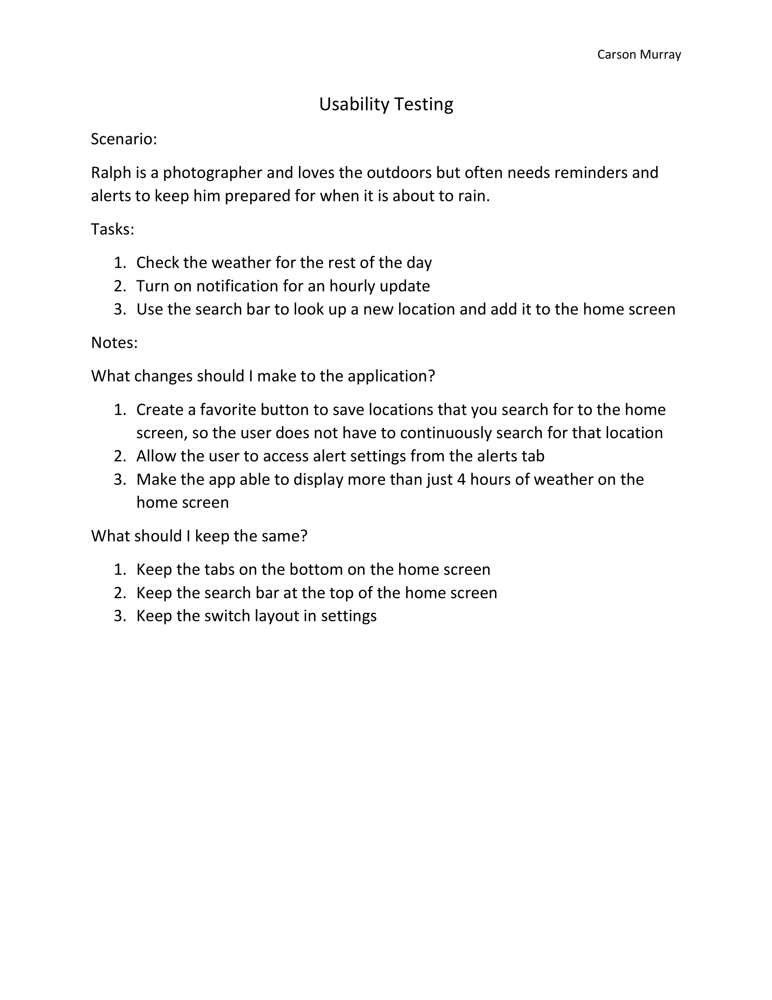

Problem Statement: Hourly Weather Update

Our users are uninformed about the change in weather throughout the day and feel frustrated due to unexpected weather conditions. Our solution should update users with an hourly forecast.
Affinity Diagram

My group and I discussed what the main topics of our app would be and the details that would be present within those topics.
Persona: 3 Personas for a Weather App
As a group we created multiple personas of people the could benefit from using our app.
Storyboard: Amanda Perez
An illustration of a situation where the Hourly Weather Update app would be useful.
Sketch: Hourly Weather Update App
A sketch that shows potential screens for the Hourly Weather Update App.
Paper Prototype: Hourly Weather Update App
A video showing the functionality of the Hourly Weather Update App.
Usuability Test: Hourly Weather Update App
A scenario where the user has to do 3 tasks and the feedback on the usability of the app.